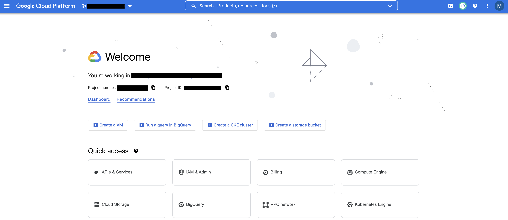

Your First GCP Session
To access the Google Cloud console, follow the link to the home page.
Use your work account email address as the username and the GCP password provided to you.
Please reset your password upon logging if for the first time as this temporary password will expire 30 days after account creation.
Note
If you need help resetting your password please contact a member of the NGC core bioinformatics team or NTT support staff (khushwant.sidhu@nttdata.com, martin.webster@nttdata.com).
You will also need to set up two factor authentication on the account: see walkthrough.
You should now have access to the GCP console:
{kind=link}
You can also interact with GCP via the CLI using the cloud SDK.
Install the cloud SDK on your local machine following instructions here. and enter the follow commands in your terminal:
$ gcloud auth login
$ gcloud config set project YOUR_PROJECT_ID
Google Cloud Projects
Projects are used to organize all your Google Cloud resources, such as network, compute and storage resources.
A project consists of a set of users; a set of APIs; and billing, authentication, and monitoring settings for those APIs. So, for example, all of your Cloud Storage buckets and objects, along with user permissions for accessing them, reside in a project.
To avail of these resources and other GCP services, you must have an active project.
Projects have been created for users under dev -> ngs.
Click on the drop down menu beside the search bar on the homepage and select the project under your folder name:

You can also access GCP via the CLI using gcloud SDK.
Only you (and GCP admins) have access to the resources in your project.